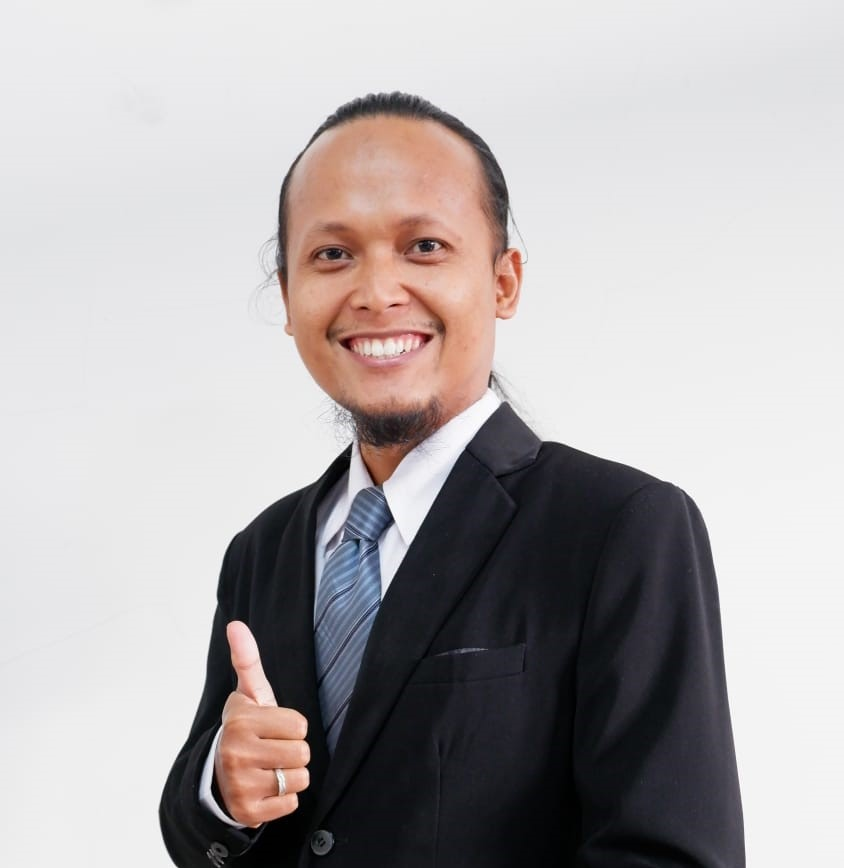

Dosen Teknik Mesin di Universitas Sarjanawiyata Tamansiswa (UST) | Kreator Edukasi
Saya adalah seorang akademisi dan praktisi di bidang Teknik Mesin dengan dedikasi tinggi terhadap pengembangan ilmu pengetahuan, riset teknologi aplikatif, dan pengabdian masyarakat. Fokus utama saya mencakup perancangan desain mekanik, sistem energi terbarukan (Fotovoltaik), serta pengelolaan kekayaan intelektual (Paten) di lingkungan kampus. Saya percaya bahwa edukasi harus mudah diakses, yang menginspirasi saya untuk aktif berbagi ilmu melalui platform digital.
Pemodelan 3D mekanik, analisis perakitan, dan pengajaran alur kerja desain berbantuan komputer.
Perancangan struktur pemasangan panel surya, analisis performa, dan optimasi energi.
Aplikasi kalkulus peubah banyak dan aljabar linier dalam pemecahan masalah mekanika keteknikan.
Penyusunan spesifikasi paten, klaim, evaluasi *prior art*, dan pendampingan HKI institusi.
Merancang alur sistem, blok diagram arsitektur, dan penyusunan dokumen paten (deskripsi & klaim) untuk inovasi kaki palsu jenis Endoskeletal.
Invensi ini mengenai komposisi komposit yang digunakan sebagai formula dalam membuat pylon komposit untuk kaki palsu jenis endoskeletal. Komposisi ini terdiri dari material (1) berupa sabut kelapa berbentuk serabut yang telah dipilin atau dikepang, material (2) berupa bambu dengan panjang dan diameter tertentu, material (4) berupa resin epoksi yang telah dicampur dengan hardener dengan perbandingan 1:1.
Memimpin dan mengevaluasi proyek perancangan struktur dudukan panel surya (PV) yang dikerjakan oleh mahasiswa teknik mesin angkatan 2024 & 2025.
Uji pemahaman Anda tentang materi Gambar Teknik melalui kuis interaktif yang telah saya kembangkan di bawah ini.
Belajar Teknik Mesin, Desain 3D, dan Edukasi Teknologi langsung dari channel YouTube saya.